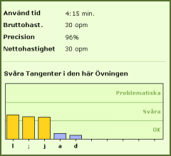

Skrivhastigheten mäts vanligtvis i Tangentslag per Minut, TPM. Bruttohastigheten är antalet skrivna tecken, mellanslag och interpunktion inkluderade, omvandlat till Tangentslag per Minut. Det är en statistik som visar hur snabbt du skrev tecknen. Bruttohastigheten är hastigheten med vilken du skulle ha skrivit om du inte hade gjort några fel. Nettohastigheten är intressantare och mer relevant, eftersom den anger din skrivhastighet med felen inberäknade i resultatet. Nettohastigheten kan även kallas Justerad Skrivhastighet. |
 |